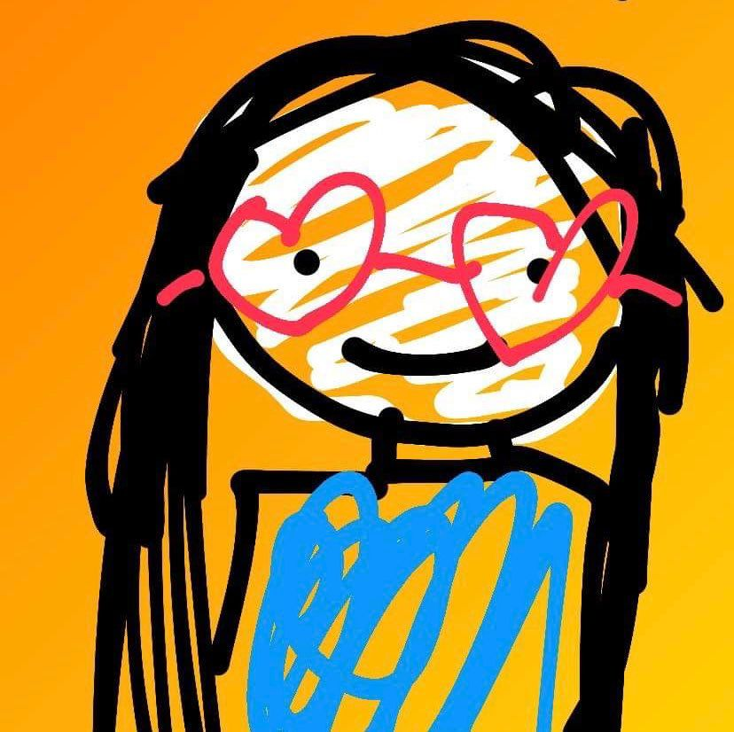

This is Dunia.
She is someone I wake up feeling grateful for.
Flowers are her favourite things in the world, and that matches her very well. Her flowery demeanour makes her a precious being. There is never
Dunia without a flower, nor does she ever stop talking about their beauty and meaning. Dunia, meaning "world" in English,
is someone everyone needs in their lives. How dull must one's life be to not have a dunia in it. Would there be a void no other can fill?
This flower field, though not built upon reality, is a gift for my friend Dunia. It is to accompany her through life's ups and downs, using flowers
that she so very loves. I will never not be thankful for meeting such an irreplacable soul. I humbly admit, I do not deserve such blessing.
Video editing and makeup are her favourite hobbies. She expresses her appreciation and care towards people through video editing. Collecting every word
said, pictures and drawings made, she combines what she finds most iconic and conjures up the most spectacular video of all. I met her through a conversation of
her talking about being made fun of after editing herself. We met through jokes and humour. That was how it came about: our humour was greatly similar.
The first few weeks of our friendship expanded through peculiar humour most others did not understand. Even now, it still remains the same. Did you know? I am
uneducated on bisexual polar bears and D has been through dark things you don't know about and water is more important than one's life.
It becomes a difficulty for her to do makeup when she is struggling in life, as her makeup is done through her emotions and thoughts. "I look so ugly even when
I smile u csn tell that's not who I am", she once said through mental exhaustion, through her rarely ever used abbreviations and typos. How heartbreaking is that,
such a priceless soul ever had to feel that way. How did those words come about? What was the terrible reasons behind that one sentence?
In our friendship, she is naturally the Moon, and I am the Sun. The thought of losing such a friend haunts me, if I am honest. A quiet person in real
life, a chaotic monster online. I like that. (I am the supreme king of chaos and catastrophe both in real life and online, what do I say?) I go
down and hide myself when I believe it's time all attention shifts to her. To be ignored when she talks about things she loves is a no. Though,
the sad part is, most times it is not me who shifts all attention away from her, and sometimes I am in no role to make her feel belonged.
Here is a warning, if it is not Dunia who is reading this: Do not ever take her for granted. It is through her heart every word she says, when
she supports you through everything, you do not take her for granted. Not a psychiatrist she is, there was no payment involved.
I apologise for not being able to be there physically by your side when you go through rough times, Dunia, so this is the least I can do. My goal
here, is to provide the ability to make our envisioned delight a true visualisation.

Happy Dunia always. This was drawn by me as support.
Dunia's happiness means very much to me.
Whether it is Melbourne,
where she dressed up and danced by the stairs,
or on the table in the kitchen.
When she talks about the chilly rain,
about the flowers she loves,
the white daisies,
the yellow roses,
the red poppies
When she watches the sunsets,
the waves,
the wondrous life nature brings.